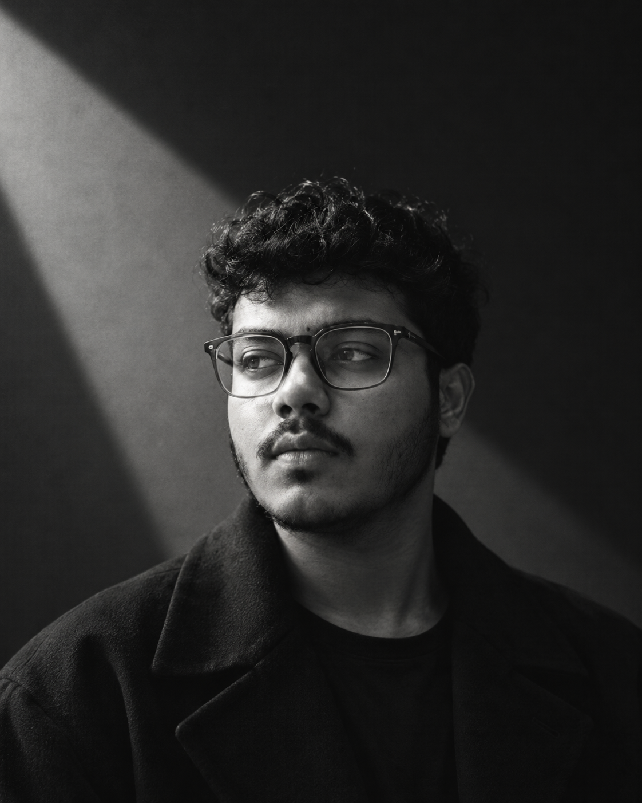

Computer Science & Engineering Student at Independent University, Bangladesh (IUB)
I’m Md. Mushfiqur Rahman (commonly known as Mushfiqur Rahman), a Computer Science and Engineering student at Independent University, Bangladesh (IUB), with a strong interest in technology, problem-solving, and continuous learning. I enjoy understanding how things work, developing my programming skills, and turning ideas into practical software solutions.
I’m particularly interested in programming, data structures, and software development, and I’m continuously working to strengthen both my technical and analytical skills. I believe in learning through practice, taking on new challenges, and improving with every project I work on.
I’m currently focused on building a strong foundation in computer science while gaining practical experience through academic projects and personal learning. My goal is to grow into a skilled and dependable technology professional who can create useful, efficient, and meaningful solutions.
Bachelor of Science in Computer Science and Engineering
Independent University, Bangladesh (IUB) [2025 – Present]